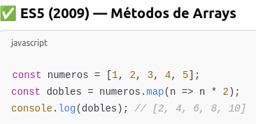
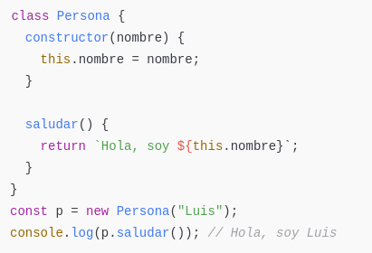
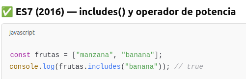
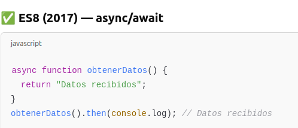
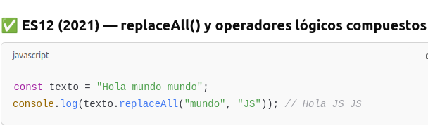

Se introducen clases en JavaScript. Aunque JavaScript es orientado a prototipos, las clases hacen más fácil trabajar con objetos complejos, pareciéndose más a otros lenguajes como Java o Python.

.includes() verifica si un valor existe en un array, de forma más clara que con .indexOf().

.map() recorre el array numeros y devuelve uno nuevo con cada elemento multiplicado por 2. Es una forma moderna y funcional de transformar arreglos.

async y await simplifican el trabajo con funciones asíncronas, permitiendo escribir código más parecido al sincrónico, pero que no bloquea el programa.

replaceAll() reemplaza todas las apariciones de una cadena sin necesidad de expresiones regulares.